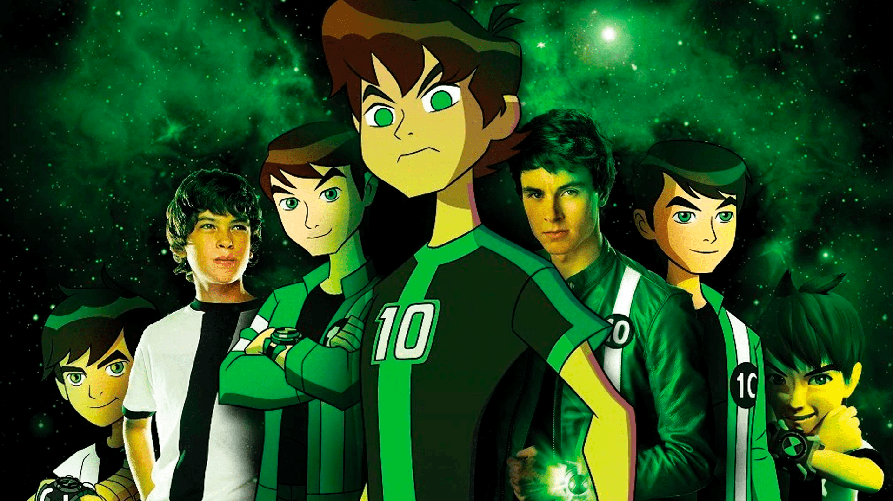

Ben 10: O Retorno do Herói Intergaláctico Cativa uma Nova Geração de Fãs
O icônico herói Ben 10 está de volta e mais forte do que nunca, conquistando uma nova geração de fãs e reafirmando seu lugar como um dos personagens mais amados da cultura pop. A série de animação "Ben 10" fez sua estreia nas telas em 2005, e após várias temporadas de sucesso, continua a impressionar com sua narrativa empolgante e personagens memoráveis.
A história acompanha Ben Tennyson, um garoto comum que ganha um dispositivo alienígena chamado Omnitrix, que lhe permite se transformar em diferentes alienígenas e lutar contra ameaças intergalácticas. Com a ajuda de seus primos Gwen e Max, Ben embarca em aventuras emocionantes enquanto enfrenta vilões e protege a Terra.
Desde seu retorno, "Ben 10" tem cativado não apenas os fãs antigos, mas também uma nova geração de espectadores. A combinação de ação, humor e exploração de temas relevantes continua a atrair jovens e adultos, tornando-se uma experiência de visualização em família.
A série também é elogiada por sua representação diversificada de personagens e culturas, promovendo mensagens de inclusão e aceitação. A evolução da narrativa ao longo dos anos mantém o público engajado, com arcos de história cativantes e reviravoltas inesperadas.
Além da animação, "Ben 10" expandiu sua presença para produtos licenciados, incluindo brinquedos, jogos, quadrinhos e até mesmo adaptações para videogames. A popularidade duradoura da franquia é um testemunho do impacto que o personagem teve na cultura pop e no imaginário coletivo.
Com uma base sólida de fãs e um legado bem estabelecido, "Ben 10" continua a inspirar gerações com sua mensagem de coragem, responsabilidade e trabalho em equipe. Enquanto novas aventuras e desafios aguardam Ben e seus aliados, uma coisa é certa: o herói intergaláctico permanecerá uma figura icônica na cultura pop por muitos anos ainda.